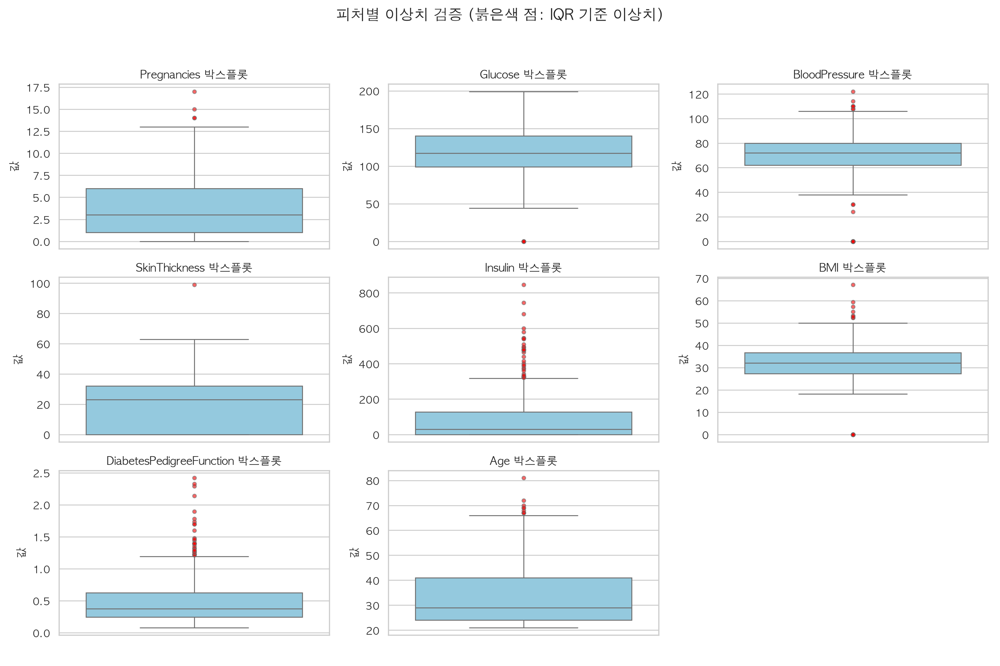

THE HIDDEN
ZERO
피마 인디언 당뇨병 데이터셋에 숨겨진 생리학적 모순과 무결성 감사 결과
- 표면상 결측치: 판다스 기준 0건의 착시
- 생체 지표 결측치: 인슐린 48.7%, 피하지방 29.6% 미측정 확인
- 전처리 원칙: 단순 0값 방치 시 모델 예측 왜곡 불가피
데이터 진실성의 우위
알고리즘의 정교함보다 선행되어야 할 도메인 기반 데이터 무결성 검증. 측정 불가능 수치의 식별 및 정밀 복원 전략 제시.
데이터 무결성 3대 핵심 지표 검증 결과
표면적 완전성 이면에 존재하는 심각한 생체 정보 공백 및 정상 범위 이탈 패턴
중복 데이터 0건
전체 768건 전수 조사 결과 동일 피험자 중복 수집 부재. 행 단위 무결성 확보 완료.
숨은 결측치(0값) 실재
생체 지표 5종에서 0으로 표기된 결측치 대량 포착. 인슐린의 48.7%가 측정 결측 상태.
IQR 극단치 혼재
단순 제거 대상인 하단 결측치와 고위험군 임상 신호인 상단 이상치의 복합 공존.
생리학적 불가능 수치:
0값에 감춰진 결측
혈압과 인슐린이 0인 환자는 생존 불가. 의학적 상식에 근거한 결측 재정의 필수.
단순 NaN 판별(df.isnull())의 한계
- 포도당(Glucose): 5건(0.7%) 저혈당 쇼크 불능 수치
- 혈압(BloodPressure): 35건(4.6%) 수축기 혈압 0 측정 오류
- 피하지방(SkinThickness): 227건(29.6%) 미측정 공백
- 혈청 인슐린(Insulin): 374건(48.7%) 대규모 데이터 누락
FEATURE-WISE ZERO PERCENTAGE (%)
N = 768 ROWSIQR 이상치 검증:
노이즈와 핵심 신호의 분리
사분위수 범위($Q_3 + 1.5 \times IQR$)를 초과한 극단값의 양면적 임상 의미
- 하단 이상치: 0값 결측치와 동일. 즉각적 전처리 대상.
- 상단 이상치: 중증 당뇨병 환자의 실제 병리 신호. 일괄 제거 시 판별력 저하 초래.

미정제 데이터 학습 시 발생하는 치명적 결함
데이터 클렌징 부재가 야기하는 인공지능 모델의 3대 신뢰성 위기
저혈당 환자 오인 편향
인슐린 0을 실제 최저치로 인식하여 중증 환자를 정상군으로 오판정하는 알고리즘 편향 발생.
핵심 피처 영향력 상실
당뇨 진단의 핵심인 인슐린 분비능 지표가 노이즈로 전락하여 모델 내 중요도 급락.
임상 의사결정 신뢰 붕괴
학습 데이터의 오염으로 인한 일반화 실패 및 현장 의료 인공지능 신뢰도 전면 실추.
데이터 무결성 복원을 위한 4단계 전처리 로드맵
결측 식별부터 모델 적합형 정규화까지의 엔지니어링 실행 계획
결측 재정의
0값으로 왜곡된 5대 생체 지표를 판다스 표준 np.nan으로 공식 치환.
조건부 정밀 대체
당뇨 여부(Outcome) 및 연령대 그룹별 중앙값(Median) 또는 KNN 기반 다변량 보정.
로버스트 스케일링
상단 고위험 극단치의 정보를 보존하면서 이상치 영향을 억제하는 RobustScaler 적용.
모니터링 체계화
학습 파이프라인 진입 전 무결성 자동 검증(Data Validation Gate) 상시 가동.
진실한 데이터만이
올바른 인텔리전스를 형성
복잡한 딥러닝 기법보다 선행되어야 할 기본적 데이터 무결성 검증의 엄정함
3대 핵심 원칙 요약
- 도메인 기반 감사: 단순 통계 지표(isnull) 맹신 탈피
- 선별적 이상치 수용: 생체 고유 신호의 무분별한 소거 지양
- 투명한 파이프라인: 전처리 근거의 설명 가능성 확보
REPOSITORY: m1nseokshin/PNU-Data